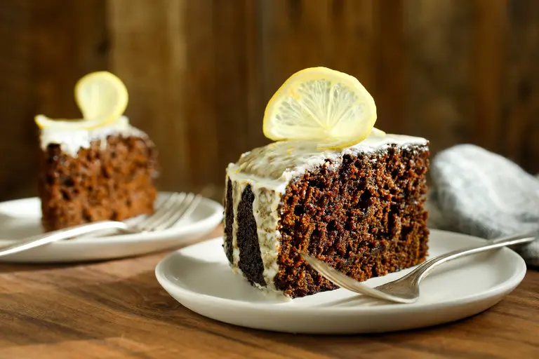

Home
Gingerbread Cake with Lemon Glaze

Description
This is a gingerbread cake recipe from the New York Times that I have been making every holiday season for a few years now.
It has become a classic in my family and we always look forward to it during Christmas time. The recipe is a little involved,
but altogether can be done in a few hours. It's been a hard recipe to mess up, even when it feels like it won't turn out.
Here's the link to the orignal recipe on NY Times:
Moist Gingerbread Cake with Lemon Glaze
Ingredients
- Butter for greasing
- 2 cups all-purpose flour
- 1 tablespoon unsweetened cocoa powder
- 2 1/4 teaspoons baking powder
- 1 1/2 teaspoons cinnamon
- 1/8 teaspoons nutmeg, preferably fresh
- 3/4 teaspoon salt
- 1 cup, packed, dark brown sugar
- 3 tablespoons turbinado sugar
- 2 1/2 tablespoons finely grated fresh ginger (a 2-ounce piece, peeled)
- Grated zest of 2 lemons
- 1/2 cup grapeseed oil
- 1 large egg
- 3/4 cup stout beer
- 3/4 cup molasses
- 1/3 cup brewed coffee
- 3/4 teaspoon baking soda
- 1 cup confectioner's surgar, sifted
- 2 to 4 tablespoons lemon juice
Preparation
- Preheat oven to 375 degrees.
- Grease an 8-inch springform cake pan and line bottom with parchment paper.
- In a bowl, whisk flour, cocoa, baking powder, cinnamon, nutmeg and ½ teaspoon salt. Set aside.
- In a large bowl, combine brown sugar, turbinado, ginger, zest of 1 lemon and oil. Beat in egg.
- Place beer, molasses and coffee in a deep pot, at least 3 quarts. Bring to a boil.
- Remove from heat and stir in baking soda. Mixture will bubble up. Allow to cool 5 minutes.
- Whisk flour mixture alternately with beer mixture into brown sugar mixture, in 3 shifts.
- Pour batter in pan and bake 40 minutes without opening oven.
- Give pan a 180-degree turn and bake another 15 minutes, until cake is springy and a tester comes out clean.
- Cool on a rack. When cool, remove sides of pan, invert briefly to remove bottom of pan and paper and set upright on a plate.
- Place confectioner's sugar in a bowl, whisk in remaining zest and salt, then lemon juice (add up to 2 additional tablespoons to moisten if necessary).
- Spread over top of cake, allowing glaze to drip down the sides.